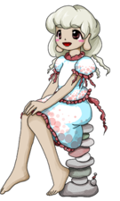

Título: Touhou Kikeijuu ~ Wily Beast and Weakest Creature
Desenvolvedora: Team Shanghai Alice
Criador: ZUN
Data de lançamento: 12 de agosto de 2019
Plataforma: PC (Windows)
Gênero: Shoot 'em up (danmaku / bullet hell)
Descrição:
Touhou 17 é o décimo sétimo jogo principal da série Touhou.
A história gira em torno de espíritos animais misteriosos
que começam a aparecer em Gensokyo pedindo ajuda.
Eles afirmam que o Mundo das Bestas foi dominado por
uma poderosa organização que controla os espíritos.
Espíritos animais surgem repentinamente em Gensokyo e procuram humanos capazes de ajudá-los.
Reimu Hakurei, Marisa Kirisame e Youmu Konpaku recebem a ajuda desses espíritos e decidem investigar a situação no Mundo das Bestas.
Ao chegarem lá, descobrem que três grandes organizações de espíritos animais estão disputando poder e influência.
Durante a jornada, as protagonistas enfrentam diversos representantes dessas facções enquanto avançam pelo território hostil.
No final da história, elas enfrentam Keiki Haniyasushin, uma deusa que criou um exército de estátuas de haniwa para proteger os espíritos humanos contra os animais.
O jogo introduz o sistema de **Espíritos Animais**, que concedem diferentes habilidades temporárias dependendo do tipo de espírito coletado.
Reimu Hakurei (sacerdotisa do Santuário Hakurei)
Marisa Kirisame (maga humana)
Youmu Konpaku (jardineira do Submundo)
Cada personagem pode utilizar diferentes espíritos animais (lobo, lontra ou águia), que alteram o estilo de jogo e os ataques especiais.
